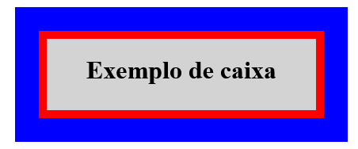

Anotações
O conceito box model ou modelo de caixas é baseado no aspecto que os elementos do HTML são especie de containers e/ou caixas e assim armazenam em seu interior o conteúdo ou outras caixas.
Tal modelo de caixa é composto por:
- Margin(margem);
- Outline(contorno);
- Border(borda);
- Padding(preenchimento);
- Conteúdo;
- Height(altura);
- Width(largura).

Tipos de caixa
-
Box-level
- div;
- h1-h6;
- main;
- header;
- nav;
- article;
- aside;
- footer;
- form;
- video.
-
Inline-level
- span;
- a;
- code
- small, strong;
- em;
- sup, sub;
- label;
- input;
- button;
- select.
Inline-level: Não ocupa a largura inteira do viewport, não quebra a linha, ocupa apenas o espaço que precisa